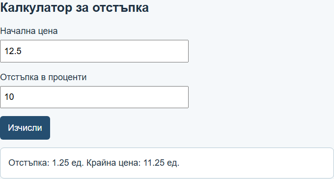
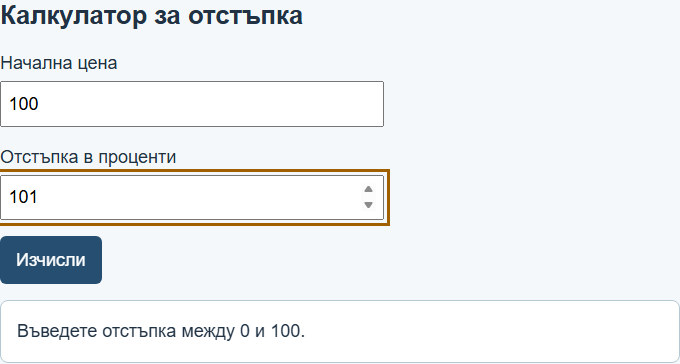

За какво е този урок?
Ще четете числа от форма, ще проверявате допустимите стойности и ще показвате изчислен резултат без изпращане на данните. Поредицата свързва HTML структура, CSS оформление и JavaScript поведение.
Четете обясненията, изпробвайте действията и запазвайте работата си. Отворените въпроси показват примерен отговор след предаване. При собствена тема са възможни различни обосновани решения.
Събитие, състояние и видим резултат
Как работи задачата
За начална цена 100 и отстъпка 20% спестената сума е 20, а крайната цена — 80. Използваме формулите:
спестена сума = цена × (процент / 100) крайна цена = цена × (1 − процент / 100)
valueAsNumber връща числото от поле с type="number". При празна или неприемлива стойност може да получим NaN — „не е число“. Number.isFinite проверява дали имаме крайно число. След това проверяваме диапазона: цена поне 0 и процент от 0 до 100.
Събитието submit се получава и при бутона, и при обичайното изпращане с Enter. preventDefault() спира изпращането на формата, защото тук изчисляваме в браузъра. novalidate позволява да покажем собствените JavaScript съобщения. Това не отменя проверките в нашата функция.
return прекратява функцията при грешка. toFixed(2) представя резултата с два знака след десетичната точка; то не проверява входа. Единиците в примера са условни.
Този урок е част от поредицата „Интерактивна уеб страница с JavaScript“: показване на подробности → смяна на тема → изчисления → проверка на форма → филтриране на списък. Общата ситуация е страница за училищни клубове: посетителят разглежда подробности, избира тема, изчислява учебна такса, проверява данни за участие и намира клуб. Всяка задача има собствен работещ пример и може да се изпълни самостоятелно. Общият подход е: избираме елементи, обработваме събитие, проверяваме състоянието и обновяваме видимия резултат.
Прочитане → проверка → изчисление → съобщение
Свойството value връща текст: например "100". valueAsNumber връща число и е подходящо за number полетата в задачата. Сравненията с < и > проверяват граници, а || означава „или“: достатъчно е една от грешките да е налице.
Функцията получава event от събитието submit. Първо спира стандартното изпращане, после прочита актуалните стойности. При грешка показва съобщение, премества фокуса и приключва чрез return; до формулите се стига само при валиден вход.
За цена 150 и отстъпка 12% получаваме 18 спестени единици и 132 крайна цена. Присвояваме готовия текст на textContent, вместо да го изпълняваме като HTML. toFixed(2) връща текст; при много големи числа може да използва експоненциален запис. В упражнението използвайте обичайни малки учебни стойности, а не реални плащания.


Работещ пример и подготовка
Работещ пример
Отворете работещия пример или изтеглете HTML файла.
Подгответе работния файл
- Изтеглете пълния работещ HTML пример. Запазете го като
25-javascript.htmlв своя папка. - Отворете един и същ файл в текстов редактор и в браузър. Записвайте с UTF-8 и разширение .html; след промяна запазвайте и презареждайте.
- В готовия файл CSS е между style таговете в head, HTML съдържанието е в body, а JavaScript е след елементите, преди затварящия body. Така те вече съществуват, когато ги избираме.
- За работа в CodePen отворете нов Pen и поставете отделните откъси от урока в HTML, CSS и JS. В JS не поставяйте script тагове. При предаване запазете резултата като пълен самостоятелен HTML файл; най-прекият начин е да пренесете промените в изтегления пример.
Ако действието не работи, отворете инструментите за разработчици с F12 или менюто на браузъра и изберете Console. Започнете от първата грешка: проверете точните id, имената на променливите, кавичките, скобите и мястото на script. След поправка запазете, презаредете и повторете действието. Неправилен id може да даде null, а повторно обявено const със същото име — грешка.
HTML елементи и CSS оформление
HTML — елементите
<h1>Калкулатор за отстъпка</h1>
<form id="calculator" novalidate>
<label for="price">Начална цена</label>
<input id="price" name="price" type="number" min="0" step="any" value="100" required>
<label for="discount">Отстъпка в проценти</label>
<input id="discount" name="discount" type="number" min="0" max="100" step="any" value="20" required>
<button type="submit">Изчисли</button>
</form>
<p id="result" class="card" role="status">Въведете стойности и изберете „Изчисли“.</p>CSS — оформлението
* { box-sizing: border-box; }
body { margin: 0; padding: 20px; font: 18px/1.6 Arial, sans-serif; color: #203244; background: #f5f8fa; }
.demo { max-width: 680px; margin: auto; }
h1 { font-size: 1.6rem; line-height: 1.25; }
button { font: inherit; padding: .6rem 1rem; color: white; background: #254e70; border: 0; border-radius: 6px; cursor: pointer; }
button:focus-visible, input:focus-visible { outline: 3px solid #a06000; outline-offset: 3px; }
input { display: block; width: 100%; max-width: 24rem; font: inherit; padding: .4rem; margin: .2rem 0 1rem; }
.card { background: white; border: 1px solid #b5c9d4; border-radius: 8px; padding: 1rem; margin: 1rem 0; }
[hidden] { display: none !important; }
Проследете JavaScript кода
JavaScript — поведението
const form = document.querySelector("#calculator");
const priceInput = document.querySelector("#price");
const discountInput = document.querySelector("#discount");
const result = document.querySelector("#result");
function calculate(event) {
event.preventDefault();
const price = priceInput.valueAsNumber;
const discount = discountInput.valueAsNumber;
if (!Number.isFinite(price) || price < 0) {
result.textContent = "Въведете валидна цена, която е поне 0.";
priceInput.focus();
return;
}
if (!Number.isFinite(discount) || discount < 0 || discount > 100) {
result.textContent = "Въведете отстъпка между 0 и 100.";
discountInput.focus();
return;
}
const saved = price * (discount / 100);
const finalPrice = price * (1 - discount / 100);
result.textContent = "Отстъпка: " + saved.toFixed(2) +
" ед. Крайна цена: " + finalPrice.toFixed(2) + " ед.";
}
form.addEventListener("submit", calculate);
form.addEventListener("input", function () {
result.textContent = "Стойностите са променени. Изберете отново „Изчисли“.";
});Самостоятелна работа и проверки
Самостоятелна работа
- Запазете работещия калкулатор в локален HTML файл или в CodePen.
- Проверете всички редове от таблицата по-долу.
- Променете началните стойности и текста на съобщенията.
- Добавете отделен ред за началната цена, без да променяте формулите.
- Променете стойност след успешно изчисление и проверете дали старият резултат е заменен с указание за ново изчисление.
Резултат: ваш работещ вариант и кратка бележка какво сте променили и проверили.
Проверете резултата
| Проверка | Очакван резултат |
|---|---|
| Цена 100, отстъпка 20 | Отстъпка 20.00; крайна цена 80.00. |
| Цена 120, отстъпка 0 | Крайна цена 120.00. |
| Цена 120, отстъпка 100 | Крайна цена 0.00. |
| Цена 0, отстъпка 50 | Крайна цена 0.00. |
| Празно поле или отрицателна цена | Ясно съобщение за грешка, без стар резултат. |
| Отстъпка −1 или 101 | Съобщение за допустимия диапазон. |
| Редакция след изчисление | Указание да изчислите отново. |
Прочетете още
MDN — valueAsNumber. Повторете и урок 18 за формите.
Допълнете и проверете калкулатора
- Запазете пълния пример като
25-javascript.html. Въведете цена 150 и отстъпка 12: очаквайте спестени 18.00 и крайна цена 132.00. - Променете началните стойности в HTML на 150 и 12 и нагласете текстовете за учебна такса за клубна работилница. Запазете формулите и проверките за крайни числа и диапазони.
- Под формата добавете
<p id="original-price" role="status">Началната цена ще се покаже след изчисление.</p>. Изберете го с нов const. При всяко submit първо задайте „Няма актуално изчисление.“, преди проверките. След успешните проверки покажете „Начална цена: “ + price.toFixed(2) + „ ед.“. Използвайте textContent. - В готовия input обработчик нулирайте и новия ред: „Стойностите са променени. Изчислете отново.“ Така не остава стара цена след редакция или грешка.
- Проверете 150/12 → 132.00; 120/0 → 120.00; 120/100 → 0.00; 0/50 → 0.00. Проверете и празно поле, цена −1, процент −1 и 101 — очаква се съобщение, не число.
- Изчислете правилно, после редактирайте входа и подайте грешен процент. И двата изходни реда трябва да показват актуално състояние. Проверете submit чрез Enter и Console.
Самопроверка
Проверете формулата
12/100=0.12; 150×0.12=18 спестени единици; 150×(1−0.12)=132 крайна цена. Екранният текст е 18.00 и 132.00. Проверете дали не изваждате самото число 12 от цената.
Защо празното поле не е нула?
Получаваме NaN. Number.isFinite връща false; показваме съобщение, насочваме към полето и приключваме чрез return. Нулата е допустимо число и не трябва да се бърка с празен вход.
Стар резултат след редакция
При input старите резултати се заменят с указание за ново изчисление. При submit има грешка за диапазона, а редът за началната цена не трябва да показва стар валиден резултат. Сравнете съобщенията и фокуса, не само крайната цена.
Какво да запомним?
- ValueAsNumber дава число, а при празен вход — NaN.
- Проверяваме числото и диапазона преди изчисление.
- Процентът се дели на 100, за да стане дял.
- PreventDefault спира стандартното изпращане на формата.
- Редактиран вход изисква ново изчисление.